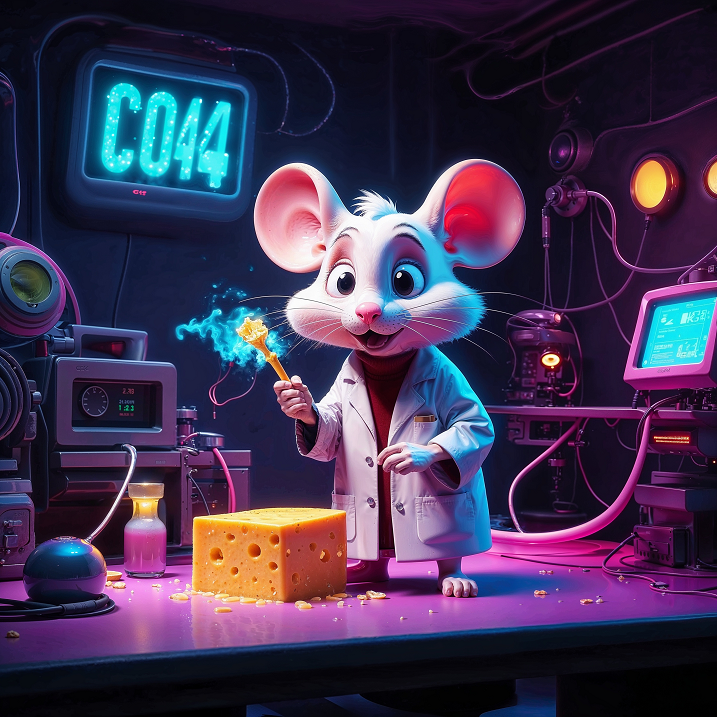

🧬 Uh oh... Lab Experiment Failed!
This page is lost in a vortex of cheese crumbs and mutant code.
Don’t worry, our smartest mouse is on it.

This page is lost in a vortex of cheese crumbs and mutant code.
Don’t worry, our smartest mouse is on it.